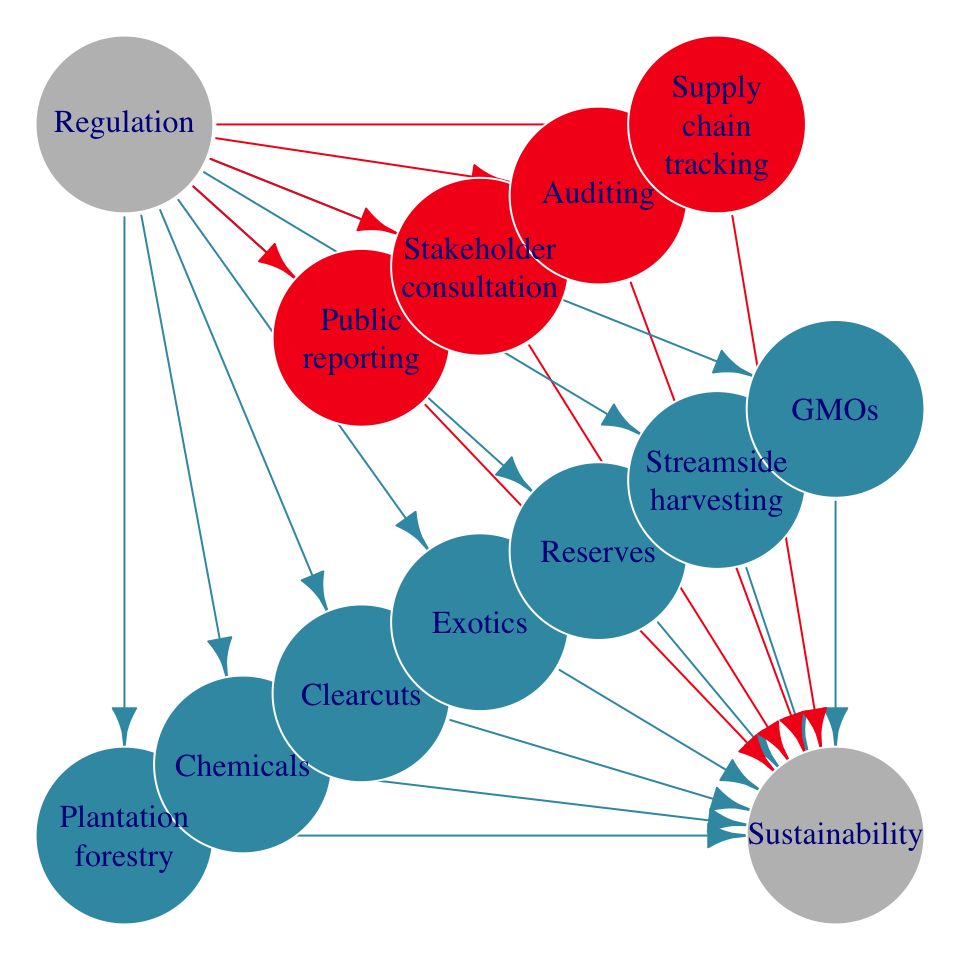
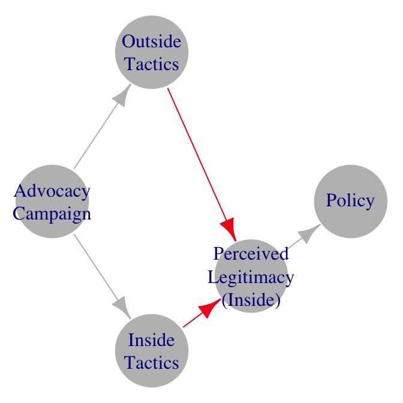
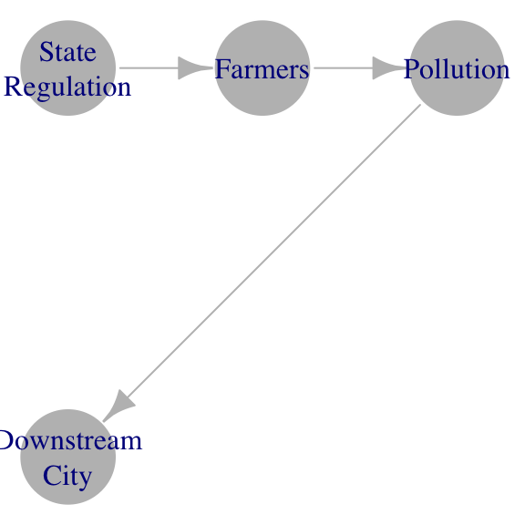
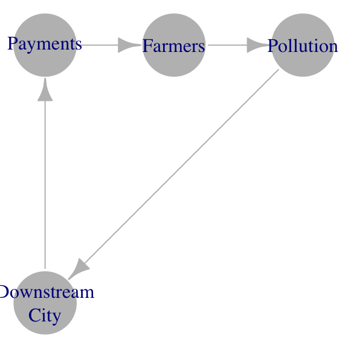

Uses and Limits of Directed Analytic Graphs Beyond Causal Designs in Social Science
Causal research designs have made productive use of the directed analytic graph (DAG), a tool adapted from engineering to visualize causal processes as a set of arrows (relationships) connecting nodes (social science concepts). Even where causality is not identified, most quantitative and qualitative research claims can be visualized as (potentially causal) relationships among concepts. This essay explores the uses of DAGs beyond casual designs, including identifying gaps in literatures and assessing the generalizability of findings. Because the objects of study and potential relationships among them are constructed by research communities, DAGs can help assess generalizability by clarifying where meaning is shared. For example, a student may ask to what extent scholars using different methods attach similar or different meanings to named concepts and types of relationships. Where meaning is shared, students might then use DAGs to help identify gaps in relationships examined, the cases studied, or the methods used to assess a relationship. Where meaning is not shared, the exercise clarifies where researchers may be “talking past one another.” Visually examining both shared and divergently defined concepts and the scope of relationships among them thus far explored may also help reveal unstated political assumptions in a body of scholarship. This essay also notes several limitations of DAGs. For example, DAGs are poor tools for communicating a researcher’s subjective experiences. Likewise, conceptual complexity and nuance possible in prose are necessarily lost in translation to a graph with discrete boxes and arrows.
1 Introduction
Humans have used diagrams as long or longer than written language. They are a common feature of science. Two recent developments make them worth attention. First, they are increasingly common in social science focused on causal identification, such as experimental designs and process tracing. Second, visualization tools have become much easier to use due to advances in network analysis. Computers can now quickly produce diagrams and network statistics about the relationships with relatively minimal input (Lo et al. 2023). As these powerful tools become easier to use, it is a good time to examine their uses beyond causal designs and network analysis.
Causal research designs have made productive use of the directed analytic graph (DAG), a tool adapted from engineering to visualize causal processes as a set of arrows (relationships) connecting nodes (social science concepts).1 The “experimental turn” in social science and increased emphasis on causal identification have increased the prevalence of figures featuring arrows representing causal relationships among variables. Likewise, such figures are common in studies using process tracing methods. Even where causality is not identified, most quantitative and qualitative research claims can be visualized as (potentially causal) relationships among concepts (Lo et al. 2023).
Qualitative researchers have productively employed directed graphs in a toolkit of research methods known as participant-led diagramming or graphic elicitation (Bravington and King 2018). Many qualitative research tools ask participants to draw their understanding of places or events. One application of drawing exercises is to elicit beliefs about casual relationships from participants by asking them to draw diagrams with arrows. Among other purposes, these methods allow researchers to assess the extent to which understandings of causal relationships among people and events are shared among participants. For example, a researcher might compare participants’ understandings of the timeline of events or the critical junctures.
Diagrams are tools to convey abstractions. All models and general claims about the social world are necessarily simplifications of complex social relations and are thus reductive. Small (and sometimes complex) graphs or concept maps have long been a tool to illustrate claims in a way that makes them easier to understand. In some ways, visualizations like DAGs offer a richer set of tools for presenting explanations than prose, especially for describing mechanistic explanations. Arrows and nodes in diagrams may use similar or different shapes, colors, or sizes to highlight dimensions of similarities and differences among concepts and causal processes. The maps can powerfully orient a reader to a complex causal story and help focus attention on certain parts of a complex set of relationships.
My aim in this essay is not to explore the implications of the mechanistic view of the world. Much has been written on this in the philosophy of science literature. For example, Bechtel and Abrahamsen (2005) contrasts mechanistic explanations with nomological explanations as approaches to scientific representation. In political science, Soss (2021) and others have discussed the advantages of the nominal approach. I also do not attempt to instruct students on conducting generalizable research or interrogate whether generalizability should be the object of study.
My aim is a more limited and practical exploration of the uses and limitations of directed analytic graphs as a tool in the research process, focusing on the early stages of the research process where we review and make claims about the state of existing scholarship. Much of this amounts to recommendations on how to use visual tools to be more explicit, clear, and probing about the relationships among theories and findings. A researcher may often conclude that the contexts or assumptions of prior studies are incommensurate, and generalizing across them is impossible. More likely, these exercises will highlight some points of similarity and other points of difference in cases, concepts, and causal theories. The aim is to help us clarify how our words fit into a conceptual schema and the limits of visual schemas for describing our complex world.
2 Assessing the generalizability of theories and findings
Because the objects of study and potential relationships among them are constructed by research communities, DAGs can help assess generalizability by clarifying where meaning is shared. For example, a student may ask to what extent scholars using different methods attach similar or different meanings to named concepts and types of relationships. Scholars may be operating with similar definitions if the words and arrows align. If not, they may be using the same language to talk about different concepts.
Similar to how qualitative researchers use participant-drawn diagrams to reveal how different people understand the world, the similarities and differences in the causal models researchers rely upon (explicitly or implicitly) reveal the state of shared understanding in a research community. Models of causal relationships are developed from specific cases and theories. Generalization involves investigating both the similarity of new exemplars to those already studied and the differences between them (Bechtel and Abrahamsen 2005). Attempting to consolidate causal theories from various studies into a single DAG can help the congruence of both theory and results.
The extent to which theories generalize can be revealed by attempting to consolidate the posited relationships among concepts with other theories built in different contexts. The exercise of attempting to combine causal diagrams from multiple studies may provide clarity that is often missing from prose. For example, a narrative description of how a study is integrating insights from previous work might say something like, “We build on how scholar A defines concept X, but incorporating insights from scholar B’s concepts about Y. Drawing a diagram of the relationship between X and Y may add clarity to what exactly we mean. Is it that X and Y both belong to a larger conceptual category? Is Y a cause, condition, or effect of X that matters for interpreting X or the relationship of X to other concepts? A diagram can force us to clarify things that language can leave ambiguous.
If theories travel well—that is, they can be integrated with DAGs built to describe other contexts, we can then assess the generalizability of findings across contexts. The extent to which findings generalize can be revealed by comparing findings across studies of the same causal relationship. This is what most meta-analyses of empirical findings aim to do.
Almost without exception in the social sciences, meta-analyses note the difficulty of comparing findings across studies due to differences in how different studies conceptualize and operationalize variables the meta-analysis seeks to assess. The conjecture of all meta-analyses is that the relationship examined in each study is conceptually the same, and thus the findings are comparable. Stated differently, the theories generalize, and thus, we can assess whether the findings generalize.
2.1 Talking Past One Another
To productively employ DAGs to assess generalizability, a student need not conduct a full meta-analysis. Each pairwise comparison of studies presents opportunities to comment on the compatibility of theories. If the theories can be made compatible, and if the studies examine the same arrow between two concepts, then the student can comment on the compatibility of findings. This is the (often implicit) setup of every study that sets out to explain contradictory findings; the conjecture is that the conceptual target is the same and empirical results are different. Formalizing this type of conjecture in a DAG can make such conjectures more explicit.
Where meaning is not shared, the exercise clarifies where researchers may be “talking past one another.” This can occur in several ways. They may be using different words for similar concepts, similar words for different concepts, or different causal models.
When scholars use different words to describe similar concepts, it will appear in a DAG as two nodes with the same arrows going in from and out to other nodes.
When scholars use the same word or phrase for different concepts, drawing arrows going in or out of that node becomes difficult. If we consider the phrase as holding one concept, one set of causal relationships makes sense, but when we switch to the other definition, many of those relationships may not make sense. This is a clue that there is ambiguity in the term and a lack of shared understanding.
Studies that set out to reconcile contradictory findings often conclude that previous studies arrived at different results because they operationalized (e.g., measured) concepts differently. Two studies may use the same labels with different meanings and thus reach opposite conclusions. For example, political scientists, sociologists, and legal scholars debated whether voluntary certification standards had increased or decreased in stringency for decades. Studies came to opposite conclusions about whether stringency was increasing, decreasing, or staying the same because they measured regulatory stringency differently (Judge-Lord, McDermott, and Cashore 2020). In Figure 1, the blue nodes represent measures used by Cashore, Auld, and Newsom (2004), and the red nodes represent measures used by Overdevest and Zeitlin (2014) to arrive at opposing conclusions.

Similarly, scholars may compare different causal relationships but use the same labels to describe these relationships. This may occur even when there is agreement on all of the concepts, cases, and overall aim of the study. Consider two studies aimed at assessing the effects of advocacy campaigns on US federal agency policy. Balla et al. (2020) and Judge-Lord (2021) use the same data and discuss their research in the same terms, i.e., they agree on the cases and concepts. Both aim to assess whether mass comment campaigns, as one form of “outside lobbying,” affect agency policy. They both look at agency responses to public comments as a measure of whether outside tactics help advocacy campaigns. Yet they come to opposite results. Balla et al. (2020) find that more public comments do not help, but Judge-Lord (2021) finds that they do. However, when we look closely at the DAGs implied by each study, we see that, despite using similar language, their causal models are slightly different, and they compare different pairs of relationships. Balla et al. (2020) compare agency responses to inside lobbying to responses to outside lobbying, including within the same advocacy campaign (comparing the red arrow and blue arrow in Figure 2 (a)). Judge-Lord (2021) compares agency responses only to insider lobbying across advocacy campaigns with and without outside lobbying (comparing the red arrows in Figure 2 (b) across cases). This is an example of two studies talking past each other that becomes clear when we draw the DAG.


The exercises of comparing and attempting to integrate the two DAGs in Figure 2 (a) and Figure 2 (b) raises at least two productive questions. First, there is an extra node (concept) about the perceived legitimacy of outside advocacy claims in Figure 2 (a). A student might ask why this concept is included in one study and not in the other. More generally, we should ask why some concepts a featured in many studies and others are featured in few. Integrating the DAGs helps with this kind of assessment. In more complex DAGs, we might also question why some concepts are more central and others more peripheral to the set of causal relationships thus far explored by using “degree centrality” measures returned by graphing tools like netlit. Table Table 1 shows that the perceived legitimacy of inside advocacy tactics is more central to the theory in Judge-Lord (2021) (with total degree central of 3) than in Balla et al. (2020) (with total degree central of 2).
| Node | Degree Centrality (Balla et al. 2020) | Degree Centrality (Judge-Lord 2021) |
|---|---|---|
| Advocacy Campaign | 2 | 2 |
| Inside Tactics | 2 | 2 |
| Outside Tactics | 2 | 2 |
| Perceived Legitimacy (Inside) | 2 | 3 |
| Perceived Legitimacy (Outside) | 2 | NA |
| Policy | 2 | 1 |
Second, visualizing the causal models implied by these two studies reveals that, despite aiming to study the same thing, they are comparing different things. Students might ask which comparisons best answer the question. In some cases, we may conclude that previous studies have been comparing the wrong things. Other times, we may conclude that there are multiple valuable interpretations of a question—both sets of scholarship may be right, just talking past each other. DAGs may help clarify such ambiguity.
3 Identifying Gaps in Literatures
Where meaning is shared, students might use DAGs to help identify gaps in relationships examined, the cases studied, or the methods used to assess a relationship. For example, the two studies shown in Figure 2 generally agree on the causal model, use similar data, and similar methods. However, neither study examined the advocate’s choice to use inside or outside lobbying tactics. A broader review of the literature will find little written about this in the context of US agency policymaking. Likewise, the cases for both studies are federal agency rules. A broader review of the literature will find almost no parallel research on state agency rules.
3.1 Identifying Gaps in Relationships Studied
Representing the world as sets of discrete causes, mechanisms, and effects provides direction to both the discovery and testing of mechanistic explanations. Mapping out hypothesized causal chains and mechanisms involves developing organized systems of component parts (Bechtel and Abrahamsen 2005). Each part of a hypothesized causal chain can then be studied with a research design tailored to that narrow task situated within a larger research agenda and picture of the world. This broader picture of the world is what we craft when we review the prior literature.
Diagramming our understanding of theorized concepts and relationships can reveal two broad types of “gaps” that one might identify in a review of prior work: gaps in theory and gaps in the empirical study of theorized relationships. Gaps in theory appear in a graph as a missing connection between concepts that, upon reflection, may be worth theorizing. Gaps in empirical studies appear when we visually distinguish relationships that have been studied from those that have only been theorized. For example, Lo et al. (2023) review the literature on redistricting in the U.S., distinguishing relationships that have been studied empirically (the solid arrows in Figure 3) from those that have only been theorized (the dashed arrows in Figure 3). This figure also highlights relationships most central to the existing literature using a graph statistic (edge betweenness) to give arrows that are part of more causal chains a darker shade.

3.2 Identifying Gaps in Cases Studied
Theoretically, one of the most straightforward research designs is to replicate an existing study in a different context. In practice, studies aimed squarely at replication are rare in social science, and differences in contexts mean that concepts and methods will rarely be deployed in exactly the same way. However, it is nevertheless common to motivate research by commenting on the range of cases where similar relationships have and have not been studied. In “casing” the prior literature (inevitably a joint result of how previous scholars created the object of their inquiry and how we construct a “set of cases” from those studies), we make claims about the subjects of inquiry (Soss 2021).
Diagramming the concepts and relationships of interest may allow researchers to comment more explicitly on the range of previous cases in which a particular relationship has and has not been studied. It makes explicit what we are claiming the subjects of prior research were “cases of” by stating which causal relationships we believe were studied and in other contexts.
3.3 Identifying Gaps in Methods Employed
Defining concepts and studying causal relationships can both be done in many ways. We may thus want to summarize how concepts and relationships among them have been explored in prior studies. To visualize the range of methods previously employed to study a relationship, we can include that “metadata” as features of the arrows between concept nodes, for example different colors to represent different combinations of methods.
4 Unstated Assumptions
Visually examining both shared and divergently defined concepts and the scope of relationships among them thus far explored may also help reveal unstated political assumptions in a body of scholarship. For example, if one has a normative assumption that it is the responsibility of a particular institution to control some aspect of social life, a researcher may draw a causal arrow from that institution to the outcome sought and conclude that the failure of that institution was the cause of the outcome. Consider a river that becomes polluted as it flows through farm fields, causing problems for a city’s drinking water downstream. One social scientist may draw a causal diagram with arrows pointing from a state regulator to the farmers to the pollution, highlighting a lack of state control (Figure 4 (a)). Another social scientist might draw a diagram pointing from the downstream city to the farmers, highlighting the lack of payment to compensate the farmers for providing cleaner water (Figure 4 (b)). Each model assumes a set of social responsibilities and appropriate modes of control.


5 Limitations
There are well-noted limitations to mechanistic descriptions of the world.
5.1 Subjective Experience
DAGs are poor tools for communicating a researcher’s subjective experiences. DAGs present the world as mechanistic. For the same reason that a machine is a useful metaphor for simplifying and developing a shared understanding of the world, it also deemphasizes subjective experience. A causal diagram focuses on a process that exists out there in the world, rather than an experience. Focusing on the sequence of events may deemphasize how people, including researchers, feel about those events.
However, DAGs can be a tool to systematically gather data on the subjective understandings of causal relationships (Bravington and King 2018). In the same way that formalizing claims about research findings can highlight places where scholars share or lack meaning, qualitative researchers use DAGs as a research tool to elicit participants’ understandings of causal relationships. For example, a researcher might ask participants to draw their understanding of the chain of events or to draw arrows connecting events of interest. This method is known as “graphic elicitation” (Bravington and King 2018).
While Bravington and King (2018) emphasizes the abilities of diagrams to capture subjective experience, they are still limited to a mechanistic representation. In their example, emotion might be represented spatially on the vertical of a timeline. While useful, this type of representation still flattens experience.
5.2 Loss of Complexity and Nuance
Conceptual complexity and nuance possible in prose are necessarily lost in translation to a graph with discrete boxes and arrows, especially if the aim is to develop general models. Indeed, much of the confusion discussed above resulting from scholars “talking past each other” or using incommensurate models results from words or phrases being taken out of context. In the context of the prose of each study, the definitions of the concepts usually make sense. Confusion arises when we take claims out of this context and set them alongside other studies that use similar words or phrases with different meanings. On the one hand, reconciling conflicting meanings of concepts can resolve ambiguity and contribute toward generalization. On the other hand, doing so may involve abandoning the complexity and nuance that a scholar meant when they developed or adopted a concept to describe a particular set of cases.
Appendix
5.3 Code
All plots in this paper used the netlit R package introduced in Lo et al. (2023) (available at https://JudgeLord.github.io/netlit), example data available at https://github.com/JudgeLord/dags, and the following plot function:
# load data for example DAGs
edges <- read_csv("https://github.com/JudgeLord/dags/blob/main/edges.csv")
node_attributes <- read_csv("https://github.com/JudgeLord/dags/blob/main/node_attributes.csv")
# create a graph with netlit's review() function
netlit::review(edges,
edge_attributes = "color",
node_attributes = node_attributes) |>
# pluck out the graph object
pluck("graph") |>
# plot using the default igraph plot function
plot(margin=0)For fancier plots, see JudgeLord.github.io/netlit/articles.
5.3.1 References
Footnotes
DAG is also used to describe a directed acyclic graphs, a special case where arrows between nodes can point in only one direction. While the acyclic property is extremely important for causal identification (as well as computer operations), it is less important for the applications I discuss here. Indeed, many social science theories posit cyclical relationships, so by DAG, I mean the more general analytic version where arrows can go both ways, also called simply a directed graph. Such visualizations with arrows connecting nodes go by many names in different disciplines, including “influence diagram” in decision analysis and a sub-class of “timeline-based” methods in infographics.↩︎